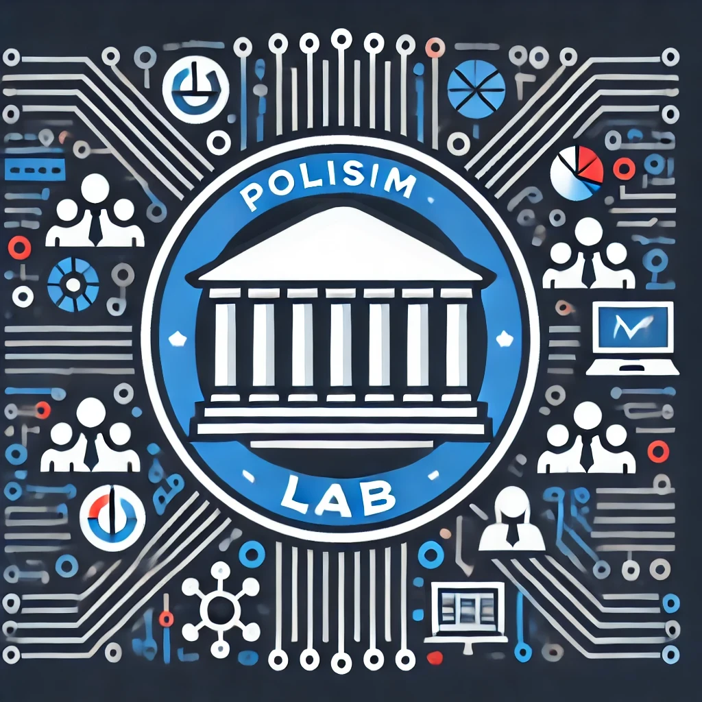

![]()
POLISim Lab
Political Simulation Systems for Education and Research

What is already known about this topic?
- Simulations and Role-Plays are common practice in Political Education
- Educational (Computer) Games are well researched in terms of Learning Outcomes
- Deliberation Analytics have profited from the rise of Artificial Intelligence
What is the research gap?
- Political Education has overlooked Educational Technologies
- Artificial Intelligence can be used to generate Role-Play Scenarios
- Deliberation Analytics are missing in computer-enhanced Education
What is the contribution to the research field?
- An Integration of Learning Technologies and Political Education
- Cutting Edge Exploration of Artificial Intelligence for Learning Content Creation
- A Method Toolkit to analyze Discussions in Learning Environments
What is unique about the group proposal and applicant?
- Engineering with Profound Implications for both Society and Scientific Advancement
- Rare Interdisciplinary Background in Computer Science and Political Education
- An unusual and valuable Combination of Academic Skills and hands-on Software Engineering
Outline
The ability to talk to each other in a peaceful and productive manner is paramount for a society drifting apart. The proposed research group tries to contribute in a small way to solving these issues by facilitating teaching methods that address competencies needed for an open discussion culture. For this, modern technologies and computer-enhanced methods are used to foster a learning environment that promotes tolerant and open speech.
Computer technology has become an indispensable tool in educational research and practice. However, there is a gap in the case of computer-assisted political education, specifically the support of deliberation with role-plays. The aim of the proposed research group is to fill in the blanks by developing a software framework that addresses these challenges. This environment will seamlessly integrate simulations, deliberation, and learning analytics in the political education classroom.
Technology plays a crucial role in enhancing political science education by supporting both teachers and students in various ways. For teachers, it lowers the bar for using advanced methods by facilitating content creation, enabling the use of simulations to build intuition [@calderon_systematic_2015;@connolly_systematic_2012;@vlachopoulos_effect_2017], tracking learning outcomes [@Dehne2018_compbase_mobile;@Dehne2019_compbase_ple;@dehne2014], and overcoming barriers related to distance, language, and culture. For students, technology creates immersive learning experiences [@dishon_making_2020], offers flexible options for distance and personalized learning, and supports constructivist learning approaches [@bada2015constructivism] by providing a foundation for individual opinion formation [@chang_study_2011;@lo_adolescents_2017] and enabling self-regulated, creative learning environments [@Paa_en_2022].
Political Education in Germany tries to build deliberative competencies such as taking on perspectives, discussing using arguments and moderating uncivil statements. Role-plays, a well-established method in political science education [@petrik2017handbuch;@duchatelet_unravelling_2020;@duchatelet_looking_2019], are particularly effective in fostering the ability to take on different perspectives, understand institutions and procedures. It enables the training of essential discussion, rhetoric, moderation, and academic leadership skills. Their complexity can vary: the simplest form is a discussion between two students taking pro and con sides of a current issue like reenacting an American presidential debate. But it can also be a more complex procedure like the Model United Nations [@duchatelet_explaining_2021] where students are selected in a tournament mode from all over the world to sit in the real United Nations venue and discuss world politics. Sometimes this kind of role-plays is used as incubators for actual problems [@poole_becoming_2010]. Although simulations are not the only option to support political learning with technology, it is the most obvious choice. It is one of the strengths of computer technology to create a rich but unreal environment where social processes and political acts can be studied in a safe and ethical setting.
The proposed research group will be situated in the computer science faculty and focus on the construction and accompanying research of the learning environment. It is thus clearly located in the engineering field and will follow the customary methodology in that area [@peffers_design_2007;@vom_brocke_introduction_2020].
A) Scenario Creation (SC)
The planned simulation environment for political learning is composed of three primary components, each interconnected to create a cohesive system. The first component, the Scenario Creation (SC), supports generating [@davis_prompt_2024] and customizing the scenarios that drive the simulations. It leverages artificial intelligence to produce realistic scenarios [@vermeiren_assessing_2022], such as a European Parliament debate on a current issue, ensuring relevance and depth. Additionally, constraint programming [@gebser2011complex] is applied to tailor these scenarios according to specified parameters, including among others time limitations, learner group size, and the intended scope of knowledge.
B) Role-Playing Game Environment (RPGE)
The second component, the Role-Playing Game Environment (PPGE), provides the structural framework for the simulation. This modularized framework guides users through the simulation process, offering three distinct settings: institutionalized environments like Model United Nations [@duchatelet_explaining_2021], deliberation-focused discussions [@gold2017visual], and rational choice-oriented decision-making scenarios [@chen_otreeopen-source_2016]. This environment interfaces seamlessly with the Scenario Creation, allowing scenarios to be easily loaded into the system. To ensure flexibility and scalability, service-oriented principles [@Benatallah2008] are employed, enabling the decoupling of various elements. The environment is also going to support a range of hardware, from mobile devices to more complex setups like AR and VR [@Zender_Buchner_Schäfer_Wiesche_Kelly_Tüshaus_2022], creating a pervasive [@Zender2013] and immersive [@Mulders2023b] learning experience.
C) Deliberation Analytics (DA)
The final component, Deliberation Analytics (DA), offers an automated framework that provides valuable insights into the discussions taking place during the simulation. This framework is designed to be transferable to other use cases, such as the National Educational Platform [@gleiss2023governance], where it can enhance or moderate online forums. Speech-to-text technology is integrated, interfacing with mobile devices to access and display real-time analytics [@gold2017visual]. Using natural language processing (NLP) techniques, this component assesses the quality of discussions by analyzing interaction patterns [@dehne2023consistent], identifying key arguments through argument mining [@lawrence2017using], and measuring the fairness of exchanges, including time distribution and the presence of uncivil speech [@papacharissi2004democracy;@friess2021collective].
This design not only supports political education by making role-plays more accessible. It creates a laboratory for teaching and studying deliberation, too. This could then be used in various fields such as ethical AI, environmental studies and many other fields where a healthy discussion culture and student engagement is required. Moreover, it is situated at the intersection of the three fields of expertise of the applicant (computer science, education and political science) and thus would further qualify him for an academic career in computer-assisted (political) education and deliberation research.
Research Questions and Group Outline
The research group will tackle the intersection of political education and learning technologies from the engineering perspective focussing on design principles, implementation and evaluation. To scientifically guide this process, it will try to answer the following research questions:
- How can educational role-plays be designed to align with contemporary political issues?
- What are optimal parameters, prompts or other settings that produce useful scenarios?
- How can the generation be constrained to useful input for role-plays in an educational setting?
- How can computers assist in improving situatedness and immersion in political learning role-plays?
- What are the effects of game elements on the game-specific experience metrics?
- What are the results in terms of technology acceptance and technical performance measurements?
- What is the effect on learning outcomes given the complex interaction of method, situation, learning group and technology?
- How can deliberation skills be measured?
- How can discussion analytics be implemented as a subset of learning analytics to improve educational technologies?
To handle these multiple challenges, the group will consist of three PhD students in addition to the group leader who are going to focus on the three parts outlined earlier: the Scenario Creation (SC), the Role-Playing Game Environment (RPGE) and the Deliberation Analytics (DA).
The first task in the group will be a joint effort to write a review paper discussing the state of the art in terms of technology support for political education. This will bring all the group members up to speed and also engender team building. After that the group members will define interfaces between their projects and concentrate on working on their own component. The following describes these modules and the corresponding PhD projects in detail.
PhD Project: Scenario Creation (SC)
In recent years, large language models like the Generative Pre-trained Transformer (GPT) have revolutionized natural language processing (NLP), particularly in their ability to generate coherent text, answer questions, and perform a wide array of language-related tasks with remarkable accuracy. These advancements stem largely from the adoption of transformer architectures [@devlin2018bert;@tay2022efficient], which have significantly enhanced the capability of models to manage long-range dependencies within a text. The transformer model, powered by the self-attention mechanism [@vaswani2017attention], excels at discerning the relevance of different text segments, regardless of their position within the input, allowing for a deeper understanding of word relationships and the generation of complex word sequences such as role-playing scenarios.
The SC is going to be based on the transformer architecture but will need modification to include the game aspects in the output. As a training input the German database of educational political simulations and similar resources can be used [@dechant2017planspieldatenbank; @rappenglueck2017praxis]. This part of the group will focus on finding optimal parameters, prompts or other settings that produce useful scenarios for role plays. Another challenge is going to be constraining the output to be useful and to cause little to no work for the teachers. Although this seems difficult, there are certain properties of the use case that make it likely that this can be achieved given the current state of artificial intelligence [@SALEHIN202452].
Transformer based text generation has been reported to produce hallucinations that don’t have any grounding in facts [@hallucination_2023]. But “Simulations do not necessarily require a high degree of realism, which is why web interfaces, desktop applications, augmented environments, or fully immersive virtual realities can be chosen depending on the use case. Combinations of these scenarios can also reflect different power dynamics in asynchronous applications, such as those of a coach (bird’s-eye view through a web application) and a learner (isolated through full immersion)” [@axel_2021] (translated using AI). Less realism may well make it easier to take on the role for the students and enter the flow-experience [@zoerner_flow_2024]. It can also help to leave strong beliefs behind and be more open for the discussion. It is the teacher’s task in any case to transfer the learnings from the fictional setting to the presence.
The validation of the results could be in terms of usefulness, but the main evaluation will focus on algorithmic performance. For this reason, methodology from the NLP community will be prioritized. The same holds true for the constraining algorithms. For the above-shown reasons, the PhD student is going to need a strong background in computer science, particularly in the fields of NLP, Machine Learning or Logic Programming.
To ensure the best possible results, the PhD student benefits from strong connections at the University of Potsdam, which specializes in the research and teaching of constraint programming. Additionally, the group leader has expertise in this area, having previously taught the subject, and can contribute valuable insights and guidance.
PhD Project: Role-Playing Game Environment (RPGE)
Role-plays are a standard method in education in areas where perspective-change is needed and rational judgment (ger. Urteilskraft) of social aspects is relevant. In the political education classroom it is a typical approach to let students reenact two sides of a conflict such as pro and cons of a war decision or a presidential debate. This can also be much more elaborate up to simulations that can take a week.
One of the challenges is to support different levels on the continuum of role-plays and simulations. [@petrik2017alltagswelt] argues that the German word “Planspiele” (translates to ‘planned games’, the author) focuses more on conflict than on recipient-orientation which means that the planned institutional games are much more abstract and professionalized than the emotionality of acting in a role-playing exercise. In this case, the main conceptual challenge is to model these kinds of role-play variants.
This component is going to use concepts from serious game engineering [@hou_systematic_2023;@carlier_software_2023] and existing simulation software [@chen_otreeopen-source_2016]. The resulting software framework should support the various inputs and configurations the scenario creation provides. It is also necessary to generalize the game aspects to allow for different human-computer interactions, because “the use of simulations through VR or AR technologies […] allows conflicts experienced by learners to be authentically represented. As a result, data collection can be conducted in a laboratory setting while maintaining high ecological validity” [@HUANG2021104100] (translated using AI). Instead of overloading the software with all kind of implementations, it only needs to provide an interface for different scenario adapters. In one case, this could be a simple web interface, in another, an augmented reality setting could be supported where students simulate something more interactive like a United Nations conference. This approach keeps the workload for the software implementation manageable.
The PhD student is going to implement only one or two game types as a proof of concept for the framework that showcases the modularity and extendability. For this, the student needs a background in computer science with a focus on software engineering. A strong interest in game development is recommended, too. In terms of input, one scenario from the role-play database should be implemented as a minimal working example of the software architecture to avoid blocking dependencies from the first component.
PhD Project: Deliberation Analytics
Deliberation means a sensible, rational discussion where all the stakeholders come to a consensus that can be generally supported. It is a normative concept in political theory and can be traced back to Habermas’ discourse ethics [@habermas2009diskursethik] and Rawls’ A Theory of Justice [@rawls1975theorie]. It is a way of looking at discussions and assessing their quality [@steenbergen2003measuring] in terms of openness, tolerance and inclusiveness. The ability to participate in a productive discussion, use arguments, take on perspectives and moderate uncivil participants are important cornerstones of political education and beyond. To assess the result of role-plays, one way is to use the deliberative quality of the group discussion during the simulation as a proxy.
This part of the research group tackles the question of how deliberation skills are measured and how this ties into the existing research in the area of learning analytics. This is an important addition to the research group for the following reasons: a healthy discussion is not only relevant for a political education classroom. It should be desirable in all kinds of learning environments where group collaboration leads to dissemination and deliberation. Most significantly, it connects the research group to the strong trend of social media analytics in computational social science.
One of the technical tasks of this part of the group is to integrate the collection of speech data into the RPGE. Having access to an audio lifestream, speech-to-text technology is going to be used to have the discussion data available in the same format as discussion transcripts from social media. This is useful to reuse existing research and tooling [@dehne_dtrees_23;@duthie_classifying_2018;@gold_visual_2017]. In fact, the audio stream could also be directly piped into multimodal transformer models [@xu2023multimodallearningtransformerssurvey] if a more machine learning oriented approach yielded better results. The outcome of the analytics can be forwarded to the teacher or strategically presented within the RPGE right away.
Text data collected in the National Educational Platform [@gleiss2023governance] can be used as a provisional input to avoid a blocking dependency to an up-and-running RPGE.
The PhD student working on the DA part of the group needs a background in NLP, learning analytics or pedagogical psychology. A candidate from the field of computational social science might fit if the candidate can demonstrate strong computational skills.
Group Lead: Teacher Facilitation and Learning Analytics
Evaluating the effect of complex pedagogical interventions is challenging. The fourth role in the group is going to focus on integrating different quality markers into one comprehensive framework. These include the technical performance markers included in the SC, the RPGE and the DA. But this also includes the effect on the teacher in terms of facilitation and the outcome for the learners in terms of personal development. [@DehneWL17] argue that the interaction of technology and education has been biased by the idea that the impact of technology always needs be evaluated in terms of learning outcomes. They argue that in some cases, the technology enhancement allows for types of learning experiences that could not be achieved otherwise. Moreover, in other cases, the main advantage of the technology is to facilitate teaching and reduce the workload in a compressed academic system.
The project aims at recruiting a panel of experienced teachers and students enrolled in teacher education programs. They will participate in the iterative evaluation of the technology prototype, following the principles of Design-Based Research (DBR) [@Reinmann.Januar2015]. This panel will not only assess the usability and effectiveness of the technology in each development cycle but will also serve as a benchmark to compare the difficulty of using the same methods without the aid of the technology. By establishing this gold standard, the project will provide a comprehensive basis for judging the extent to which the software facilitates the educational processes it is designed to support. Given that teachers are typically a challenging group to recruit for research studies due to workload constraints, this process will be coordinated with Lernen:Digital and the Potsdamer Zentrum für Lehrerbildung und Bildungsforschung (ZeLB).
To address the impact on learners, existing research on learning analytics and learning outcomes from role-plays in political education is going to be combined into an analytical framework. If possible, a double-blind study will be conducted at the end of the four-year span. In this study, the control group is going to take part in a set of classical lessons, whereas the test group executes the role-play in the constructed environment. The group lead heads the experimental setup and prepares the surveys and accompanying tests. He supervises the software development, too.
The overarching goal for the group lead is to develop a methodology of supporting political education with computer-technology. This encompasses …
- … the use of AI to generate learning content
- … the use of simulations to create an immersive and situated learning situation
- … the use of natural language processing to improve develop learning analytics for political learning
The developed prototype addresses the relevant forward-looking research areas, allowing the conceptual research to be empirically validated. This ensures that theoretical assumptions and hypotheses can be supported through practical application and empirical data.
Integration with Host, Institute and Beyond
The hosting chair Prof. Lucke provides a successful and fitting environment for the proposed research group as it has an impressive track record in the field of learning technologies. Further, Prof. Lucke has a lot of experience developing and hosting bigger infrastructures for learning such as the EliS project and the BIRD project. She has also published in the area of serious games and immersion. Specifically, Axel Wiebke from her group is successfully researching immersion and learning outcomes using a virtual classroom setting which fits with the RPGE engineering. Tobias Moebert, also from her group, has published in the area of mobile games and is focussing his PostDoc research on complexity and AI which fits with the SC questions.
In the social science faculty, the research group of Prof. Juchler works on learning places, political education and theater and situated learning. As role-plays are closely related to acting and try to simulate situated learning this could prove a valuable cooperation. Moreover, Prof. Juchler already can connect teacher candidates with the project as both participants and researchers.
Within the Department of Computer Science, the Chairs of Machine Learning and Logic Programming collaborate on closely related research areas. Given the applicant’s previous tutoring experience with the Logic Programming Chair, their integration into this collaborative environment is expected to be seamless.
The applicant brings an existing network from the University of Göttingen and the Humboldt University, as well as the GESIS, Leibniz-Institut für Sozialwissenschaften to the University of Potsdam.
The University of Potsdam has a reputation for leading Computer Science Research in Brandenburg and beyond. The interdisciplinary research group would form a lasting link to the political education field, showcasing the innovative potential of the region Berlin-Brandenburg.
Why the University of Potsdam?
- A strong pre-existing focus on Data Science and Cognitive Sciences
- An excellent infrastructure for research groups including the AI Competence Center
- An existing network of scholars and international cooperation partners
What this group adds to the University of Potsdam
- Cutting-Edge AI research radiating to Social Sciences
- A big network that spans Technical and Educational Disciplines
- A prominent Lighthouse enriching the current Portfolio